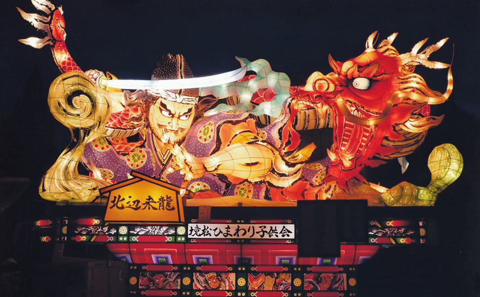
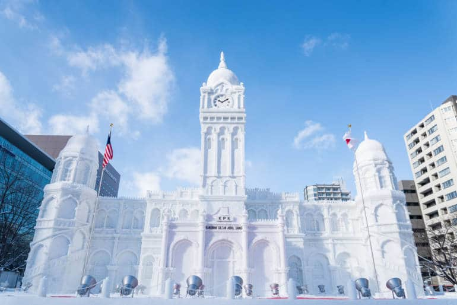
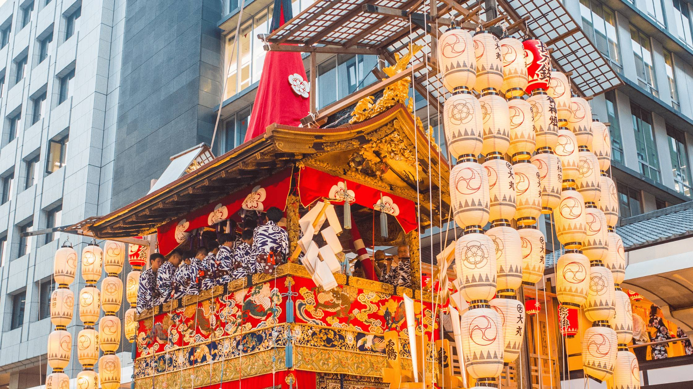

Aomori Nebuta Matsuri
The most widely known explanation is that the festival originated from the flutes and taiko that the future early 9th century shogun Sakanoue no Tamuramaro used to attract the attention of the enemy during a battle in Mutsu Province. These magnificent illuminated floats, called "nebuta," feature elaborate scenes from Japanese folklore and history, creating a spectacular nighttime parade that attracts millions of visitors each year.
Sapporo Snow Festival
The Sapporo Snow Festival was started in 1950, when high school students built a few snow statues in Odori Park. It has since developed into a large, commercialized event, featuring spectacular snow and ice sculptures and attracting huge numbers of visitors. The festival is staged on three sites: the Odori Site, Susukino Site and Tsu Dome Site.


Gion Matsuri
The Gion Festival (祇園祭, Gion Matsuri) is one of the largest and most famous festivals in Japan, taking place annually during the month of July in Kyoto. Many events take place in central Kyoto and at the Yasaka Shrine, the festival's patron shrine, located in Kyoto's famous Gion district, which gives the festival its name. It is formally a Shinto festival, and its original purposes were purification and pacification of disease-causing entities. There are many ceremonies held during the festival, but it is best known for its two Yamaboko Junkō (山鉾巡行) processions of floats, which take place on July 17 and 24.